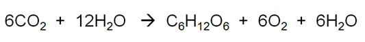
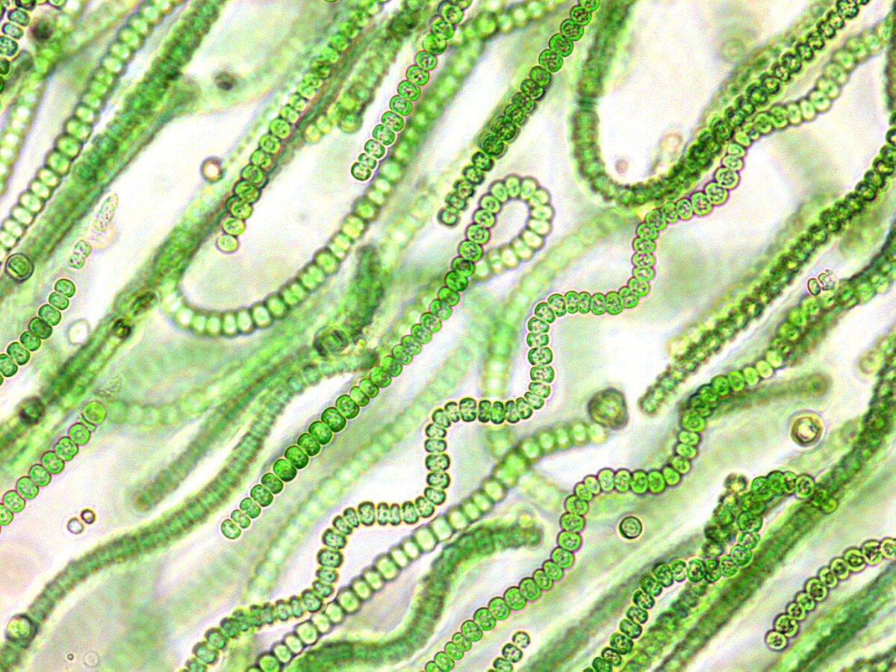
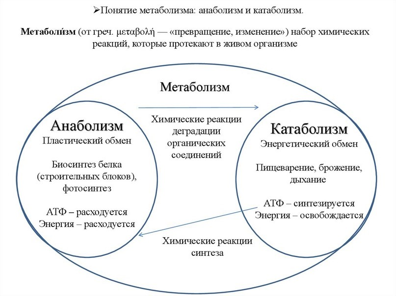
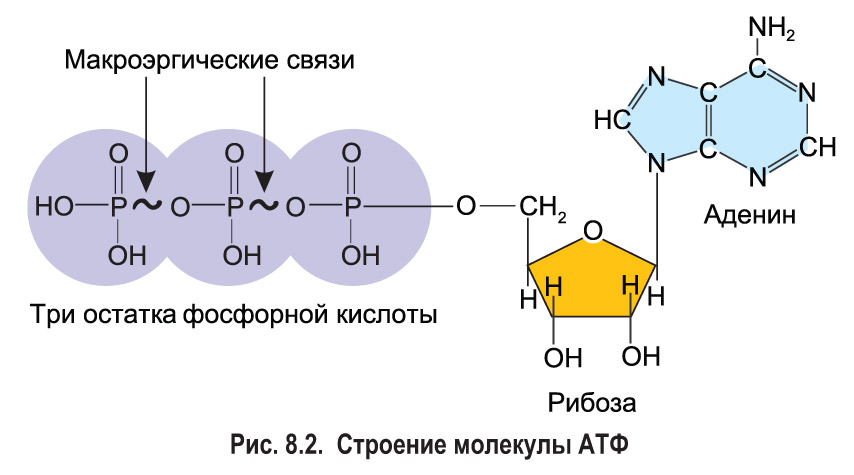
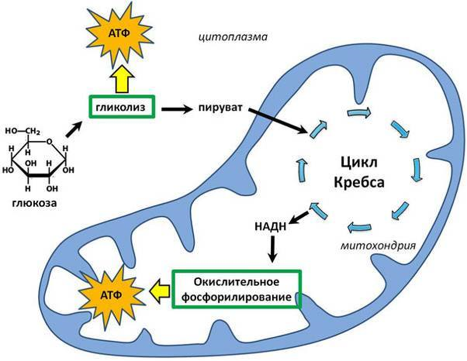
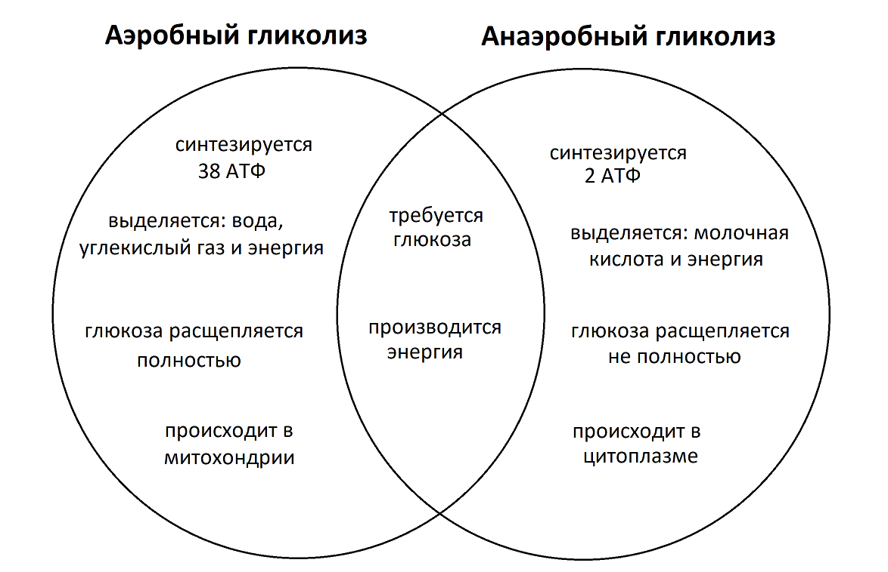
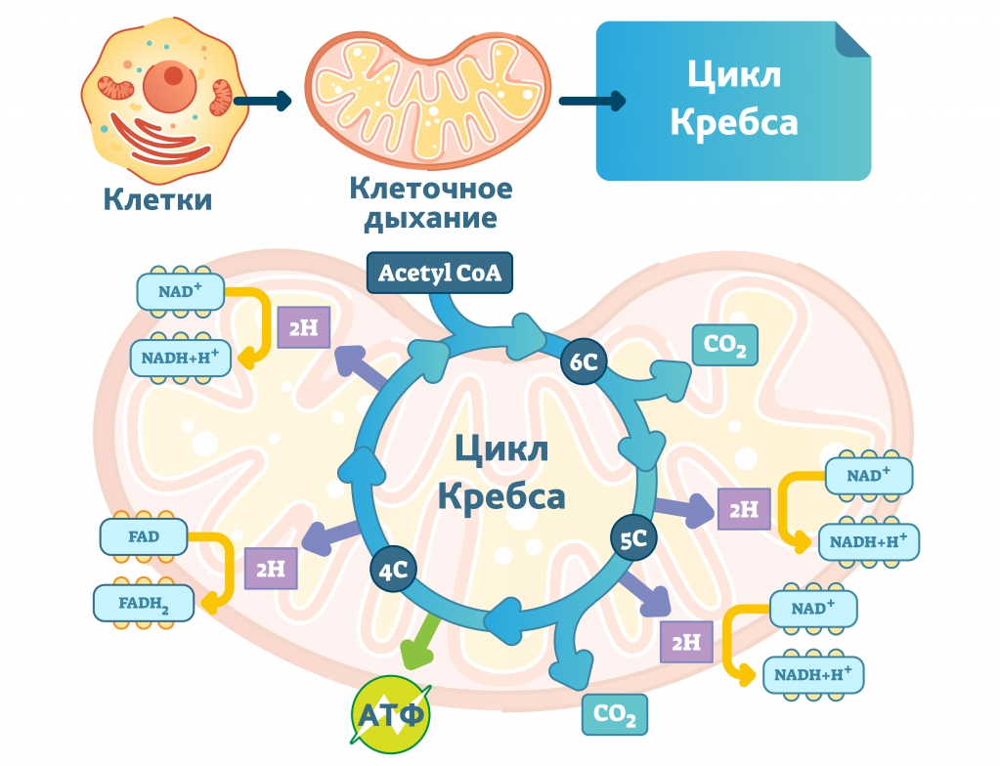
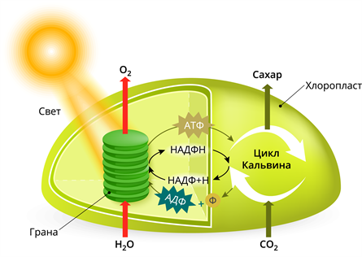
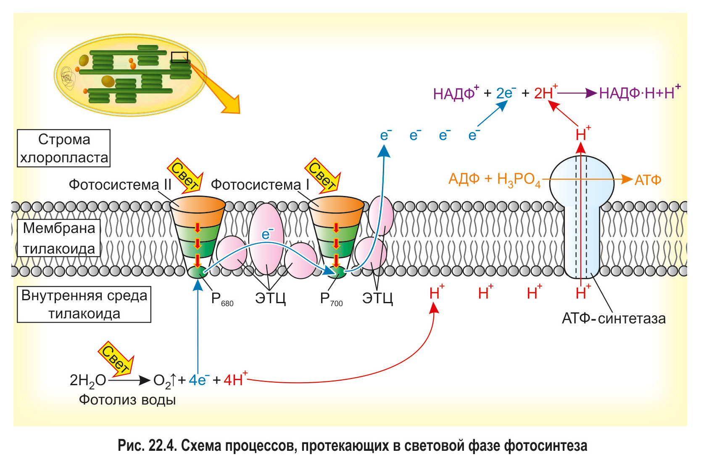
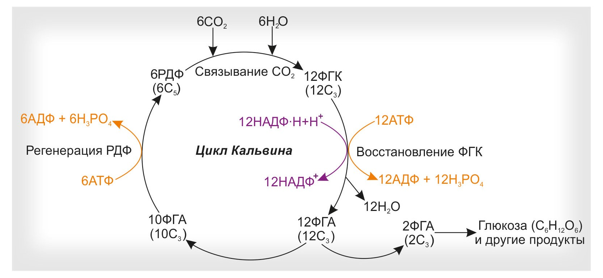

Для функционирования организмам необходимы различные органические вещества, такие как сахар, липиды, белки, нуклеиновые кислоты, витамины и другие соединения. Каждый организм синтезирует свои собственные специфические органические соединения. Для этого они используют в качестве исходных материалов либо ранее синтезированные молекулы, либо молекулы, полученные из окружающей среды. Энергия, необходимая для процесса синтеза, поступает либо из внешней среды (например, световая энергия), либо при расщеплении органических веществ из пищи.
Таким образом организмы можно разделить на две группы: автотрофы и гетеротрофы.
1.1 Откуда автотрофы получают энергию?
Автотрофы в основном представлены зелеными растениями. Зеленые растения получают первичные органические вещества в процессе фотосинтеза. Для этого им необходимы световая энергия и неорганические соединения (H2O, CO2). В результате фотосинтеза образуется глюкоза. Побочный продукт O2 выделяется в атмосферу.
Формула фотосинтеза:

Глюкоза является исходным материалом для синтеза многих других органических соединений. В растениях из глюкозы производятся крахмал и целлюлоза. Глюкоза служит началом синтезу многих липидов и аминокислот. Вместе с минеральными солями из внешней среды глюкоза является основой для многих последующих биохимических реакций. По этой причине растения не нуждаются в органических веществах из внешней среды. Помимо растений, фотосинтез осуществляют также некоторые бактерии и простейшие, например сине-зелёные водоросли.

Cине-зелёные водоросли наиболее близки к древнейшим микроорганизмам, постройки которых обнаружены на Земле. Это единственные бактерии, способные к фотосинтезу.
Автотрофы — организмы, способные самостоятельно синтезировать органические вещества из неорганических. Для этого им нужно энергия света или химических связей.
Помимо фотосинтезирующих организмов (фототрофов), к автотрофам относится группа хемотрофов. К хемотрофам относятся различные бактерии, которые используют химическую энергию для синтеза органических веществ из неорганических соединений. Энергия, необходимая для синтеза органических веществ, высвобождается из неорганических веществ в ходе реакций окисления, происходящих внутри хемотрофов. К наиболее распространенным хемотрофам относятся нитрифицирующие бактерии, железобактерии, марганцевые бактерии и серобактерии. Эти бактерии используют соли Fe, Mg и Na2, а также молекулы NH3, H2S и S в качестве источников энергии.
1.2 Откуда гетеротрофы получают энергию?
Большинство организмов являются гетеротрофными. Гетеротрофы — организмы, которые не способны синтезировать органические вещества из неорганических путём фотосинтеза или хемосинтеза. Гетеротрофы не могут существовать без органических веществ, получаемых извне. Органическое вещество, полученное с пищей, используется гетеротрофами для двух целей:
как источник энергии для жизнедеятельности организма
как исходный материал для синтеза
Гетеротрофные организмы используют в качестве источника энергии только органические вещества. Вся жизнедеятельность гетеротрофов основана на энергии, выделяемой при окислении органического вещества.
1.3 Основные процессы метаболизма
Организмы извлекают органические и неорганические вещества из окружающей среды, в основном посредством питания и дыхания. Эти вещества расщепляются и из продуктов распада синтезируются новые соединения. В течение жизни все организмы выделяют в окружающую среду остаточные продукты метаболизма - непереваренные частицы пищи, воду, углекислый газ, азотистые соединения и др. Это проявления метаболизма организма. Поскольку метаболизм связан с энергетическим обменом, эти два понятия следует рассматривать вместе.
Метаболизм — весь процесс синтеза и распада, происходящий в организме для обеспечения обмена веществ и энергии с окружающей средой.
Метаболизм делят на 2 стадии: диссимиляцию (катаболизм) и ассимиляцию (анаболизм). В ходе катаболизма сложные органические вещества распадаются до более простых, выделяя энергию, а в процессах анаболизма — более сложные вещества синтезируются из более простых с затратами энергии.

Диссимиляция — это все процессы распада сложных веществ на более простые, протекающие в организме.
Органические вещества, содержащиеся в пище или синтезируемые организмом, постепенно расщепляются ферментами до молекул с более простой структурой. В этом процессе можно провести различие между гидролизом биополимеров (например, расщепление крахмала до молекул глюкозы) и последующим окислением мономеров (таких как глюкоза).
Можно провести различие между гидролизом биополимеров (например, диссимиляцией крахмала до молекул глюкозы) и последующим окислением мономеров (например, глюкозы). Большинство реакций деградации сопровождаются выделением энергии. Примерно 40% этой энергии запасается в энергоемких макроаллергенных соединениях.
Аденозинтрифосфат (АТФ) – это самое важное макроэргическое соединение, играющее основную роль в обмене энергии в клетках живых организмов. АТФ участвует и в процессе ассимиляции, и в процессе диссимиляции.
Ассимиляция — это все процессы синтеза органических веществ в живом организме.
В ходе ассимиляции образуются сложные белки, жиры, нуклеиновые кислоты и углеводы из простых веществ. Они используются для дальнейшего использования как «строительный материал» клетки и для получения энергии при помощи диссимиляции. Процесс синтеза требует исходных материалов и энергии. При фотосинтезе, напимер, используется энергия света, но большинство других синтетических реакций используют химическую энергию, запасённую в организме. Организмы получают энергию в основном из АТФ.
Энергия необходима для жизнедеятельности всех живых организмов. Она используется для биосинтетических реакций, для переноса веществ внутри клеток и между ними, а также для любого вида движения. Энергия берется непосредственно из макроэргических соединений. Их синтез и диссимиляция происходят одновременно.
2.1 Как получается энергия?
При окислении углеводов, липидов, белков и других органических веществ выделяется энергия. При окислении различных органических веществ высвобождается разное количество энергии.
1 грамм углевода → 17,6 кДж энергии
1 грамм липида → 38,9 кДж энергии
1 грамм белка → 17,6 кДж энергии
Эксперименты на животных показали, что голодающий организм сначала расходует запасы углеводов, затем расщепляет липиды и, наконец, белки (т.к. белки в организме живых существ выполняют основную структурную функцию, участвуют в процессах обмена веществ, выполняют функцию хранения и передачи наследственной информации). Таким образом, углеводы являются первым источником энергии, используемым организмом. Помимо сахаридов, липидов и белков, распад всех других органических веществ также дает энергию, но их значение в энергетическом обмене организма ничтожно мало.
2.2 Высвобождение энергии
Энергия, высвобождаемая в процессе диссимиляции, в основном хранится в молекулах АТФ для последующего использования. Аденозинтрифосфат - это универсальное вещество для хранения и переноса энергии.

Как переносчик энергии, участвующий в метаболизме всех клеток, молекула АТФ представляет собой рибонуклеотид, который состоит из азотистого основания аденина, рибозы и трех фосфатных групп.
Если в молекуле только две фосфатные группы, соединение известно как аденозиндифосфат (АДФ). При добавлении третьей фосфатной группы АТФ приобретает около 30 килоджоулей энергии на моль. Эта энергия может быть передана от молекулы АТФ с последней фосфатной группой другому веществу, но часть этой энергии теряется в виде тепла. АТФ в основном образуется в процессе гликолиза, ферментации, дыхания и фотосинтеза.
Глюкоза – главный источник энергии для клеток, это - топливо для нормальной работы всех органов и систем человеческого организма. Глюкоза попадает в организм с пищей. Продукты питания расщепляются в желудочно-кишечном тракте, после чего глюкоза всасывается в кровь. Для того, чтобы глюкоза попала в клетку, нужен инсулин. Этот гормон вырабатывается в специальных клетках поджелудочной железы и увеличивает проницаемость клеточных мембран для глюкозы.
В большинстве организмов глюкоза хранится в виде полисахаридов, т.е. крахмала и гликогена. В растениях запасание энергии происходит в виде крахмала, при расщеплении которого образуется глюкоза. У животных функцию крахмала выполняет гликоген. При расщеплении гликогена также образуется глюкоза. Если организму требуется дополнительная энергия, то запасы полисахаридов сначала расщепляются на мономеры. Затем глюкоза постепенно окисляется, а высвобождающаяся при этом энергия запасается в молекулах АТФ. Поскольку расщепление глюкозы происходит как в растительных, так и в животных клетках, этот процесс расщепления можно считать универсальным.
3.1 Как организм получает энергию из глюкозы?
При полном расщеплении одной молекулы глюкозы организм может синтезировать до 38 молекул АТФ. Этот процесс состоит из нескольких реакций, каждая из которых катализируется определенным ферментом.
Не вся энергия, выделяющаяся при окислении глюкозы, запасается в молекуле АТФ, примерно 40% запасается в молекуле АТФ, а 60% выделяется в виде тепла.
Распад глюкозы происходит в три этапа: гликолиз, цикл Кребса и реакция дыхательной цепи.

Гликолиз происходит в цитоплазматической сети эукариотических клеток, реакции цикла лимонной кислоты - в строме, а реакции дыхательной цепи - в гребнях внутренней мембраны митохондрий.
3.2 Как происходит гликолиз?
Чтобы понять, как в клетках вашего тела глюкоза превращается в углекислый газ и как высвободившаяся энергия запасается в виде АТФ и НАДH/ФАДН₂, давайте подробно пройдёмся по каждому этапу клеточного дыхания.
Гликолиз. В процессе гликолиза глюкоза, 6-углеродный сахар, претерпевает серию химических превращений. В итоге она преобразуется в две 3-углеродные молекулы пировиноградной кислоты, или пирувата (CH₃COCOOH). Попутно образуется АТФ, а также НАД+ превращается в НАДН. Каждая молекула пирувата, образовавшаяся после гликолиза, попадает в матрикс митохондрии — внутреннее ее пространство. Там он преобразуется в 2-углеродную молекулу и связывается с коферментом А с образованием ацетил-КоА. Попутно выделяется углекислый газ и образуется НАДH.
Цикл Кребса. Ацетил-КоА, образовавшийся на предыдущем этапе, соединяется с 4-углеродной молекулой и проходит цикл реакций, в результате которых снова образуется та же изначальная 4-углеродная молекула. Попутно образуются молекулы АТФ, НАДH и ФАДH₂ и выделяется углекислый газ.
Окислительное фосфорилирование. Молекулы НАДH и ФАДH₂, образовавшиеся на других этапах, отдают электроны в электрон-транспортную цепь на внутреннюю мембрану митохондрий снова принимая свою «свободную» форму НАД+ и ФАД. По мере движения электронов по цепи выделяется энергия, которая используется для переноса протонов из матрикса приводя к образованию градиента. Протоны, возвращаясь в матрикс, проходят сквозь ферментативный комплекс АТФ-синтазу, вызывая синтез АТФ. В конце электрон-транспортной цепи электроны переходят на кислород, который принимает протоны с образованием воды.
Так заканчивается гликолиз при достаточном количестве кислорода в клетке. Такой тип гликолиза называется аэробным. Гликолиз без кислорода называется анаэробным гликолизом, или брожением.
Анаэробный гликолиз (брожение) заканчивается выделением молочной кислоты или этанола. Молочнокислое брожение происходит в мышечных клетках без доступа кислорода или в процессе жизнедеятельности молочнокислых бактерий. При этом типе брожения из одной молекулы глюкозы образуется две молекулы молочной кислоты (C₂H₄OHCOOH), но атомы водорода не отделяются и в конечном итоге синтезируется 2 молекулы АТФ.
Молочная кислота, накапливающаяся в мышцах, в отсутствие кислорода не утилизируется клетками. Это вызывает мышечную усталость, боль и судороги. Это также объясняет, почему нетренированные мышцы могут болеть после интенсивной физической нагрузки. Для восстановления работоспособности мышц молочная кислота должна быть доставлена кровью из мышц в печень, где она преобразуется в пируват.
Аэробные тренировки – это нагрузки с относительно низкой интенсивностью, при которой мышцы расходуют энергию, получаемую прямо на лету путем разложения глюкозы в присутствии кислорода. То есть потребность в энергии не превышает потребности в кислороде, который нужен для продукции этой энергии, и клеткам не приходится прибегать к анаэробному гликолизу. Это бег, плавание, езда на велосипеде на длинные дистанции с постоянной невысокой интенсивностью.
Анаэробные тренировки – это те, при которых потребность в энергии настолько большая, что клетка расходует кислород быстрее, чем он к ней доставляется, а раз кислорода нет, а энергия нужна, то клетка переходит на анаэробный путь. Примеры таких нагрузок – спринт, силовой тренинг. То есть один и тот же бег может быть как аэробным, так и анаэробным, это будет зависеть от интенсивности.

3.3 Реакции цикла Кребса
Пируват, образующийся в результате гликолиза, подвергается дальнейшему расщеплению в митохондриях. Этот процесс состоит из ряда повторяющихся реакций. Поскольку в результате этой реакции в качестве промежуточного продукта образуется лимонная кислота, этот процесс называют циклом лимонной кислоты.
Цикл лимонной кислоты — это цикл, лежащий в основе метаболизма, который связан с дыхательной цепью у всех организмов, потребляющих кислород. Встречается в митохондриях эукариот и в цитоплазме прокариот. В этом цикле задействована лимонная кислота (цитрат), которая с целью получения восстановительных эквивалентов превращается в другие органические кислоты.
Цикл лимонной кислоты является «узлом» метаболической системы. Его наиболее важной функцией является производство НАДН для дыхательной цепи. Водород, связанный с НАДН, окисляется до воды в митохондриальной мембране молекулярным кислородом. Энергия, выделяющаяся при этом, используется для синтеза АТФ. Этот процесс, также известный как реакции дыхательной цепи, является наиболее эффективным процессом производства АТФ.
Цикл Кребса является конечным путем окисления глюкозы, жиров и аминокислот.
У эукариот цикл лимонной кислоты протекает в митохондриях, а у прокариот — в цитоплазме.
Отправной точкой является двухуглеродная молекула ацетил-КоА. Он вводится в цикл и там окисляется с образованием двух молекул углекислого газа (СО₂). Затем мы выдыхаем газообразный углекислый газ через легкие.
Один цикл дает три молекулы НАД и по одной молекуле ФАД₂ и ГТФ. Молекулы-переносчики электронов (НАД и ФАД₂) затем переносятся на внутреннюю митохондриальную мембрану. Здесь происходит окончательное окисление, то есть дыхательная цепь, которая следует за циклом лимонной кислоты.

Цикл лимонной кислоты состоит из циклического ряда последовательных реакций. В ходе этого процесса происходит отделение молекул СO₂ и атомов Н. Последние связываются в молекулы НАДН₂. Так как из одной молекулы глюкозы образуются две молекулы пировиноградной кислоты, то расчет продуктов реакций основан на двух циклах.
3.4 Реакции дыхательной цепи
Реакции в дыхательной цепи происходят на гребне внутренней мембраны митохондрий. В ходе этих реакций происходит дальнейший синтез молекул АТФ за счет энергии от окисления молекул НАДН₂, образующихся в реакциях гликолиза и цикла лимонной кислоты.
В процессе расщепления молекулы глюкозы всего образуется 12 молекул НАДН₂ - 2 в результате гликолиза и 10 в цикле лимонной кислоты. В реакциях дыхательной цепи молекулы НАДН₂ освобождаются от атомов водорода.Образующийся НАД может вновь использоваться для связывания водорода в ходе гликолиза и в реакциях цикла лимонной кислоты. Отделившиеся атомы водорода соединяются с кислородом, образуя воду.
Выделяющаяся при этом энергия приводит к синтезу молекул АТФ: на 12 молекул НАДН₂ — 36 молекул АТФ .
В результате гликолиза из одной глюкозы образуется две молекулы АТФ, а в результате реакции в дыхательной цепи — еще 36 молекул АТФ, так что всего в аэробных условиях в результате полного расщепления одной глюкозы образуется 38 молекул АТФ. 38 молекул АТФ.
Зеленые растения синтезируют молекулы сахаров из углекислого газа и воды. При этом они используют энергию света. При фотосинтезе в качестве побочного продукта образуются молекулы кислорода. Хотя фотосинтезирующие организмы встречаются также среди бактерий и протистов, основная масса первичных органических веществ производится растениями. Фотосинтез – это биохимический процесс образования солнечного света в энергию химических связей органических веществ, который происходит у растений, некоторых бактерий и водорослей. В ходе фотосинтеза световая энергия превращается в химическую энергию, которая затем используется для синтеза органических молекул из простых неорганических веществ, таких как углекислый газ и вода.
4.1 Что нужно растениям для фотосинтеза?
Для осуществления фотосинтеза световое излучение должно достичь хлоропластов, расположенных в зеленых частях растения. Внутри хлоропластов находятся молекулы хлорофилла которые активизируются под действием световой энергии. Все последующие реакции фотосинтеза происходят за счет энергии активизированных электронов хлорофилла.
Процесс фотосинтеза можно разделить на две фазы — световую и темновую. Световая фаза осуществляется на мембранах тилакоидов и только при наличии света. В этой стадии происходит расщепление молекул воды и выделение газообразного кислорода за счет энергии
возбужденных светом электронов хлорофилла. Образовавшиеся в световой стадии промежуточные продукты, а также энергия, связанная в АТФ, используются затем в темновой стадии фотосинтеза. Реакции темновой фазы протекают в строме хлоропласта и не требуют света, однако для них необходимы продукты световой фазы. Поэтому темновая фаза происходит практически одновременно со световой. В этой стадии молекулы углекислого газа связываются в молекулы трехуглеродного сахара, а затем и глюкозы. Процессы фотосинтеза можно обощить следующим
уравнением:
6CO₂ + 12H₂O = C₆H₁₂O₆ + 6O₂↑ + 6H₂O

4.2 Световая стадия
Световая фаза – совокупность процессов, которые обеспечивают синтез молекулярного кислорода, водорода и АТФ за счет солнечного света. В этой стадии растение поглощает световую энергию с помощью пигмента хлорофилла, который находится в хлоропластах. В процессе фотоэлектронного переноса энергия передается через различные молекулы, что приводит к расщеплению молекулы воды на кислород и водород. Кислород — побочный продукт фотосинтеза, он выделяется в окружающую среду, а водород используется в следующей стадии.
Молекулы хлорофилла образуют совместно с другими пигментами и белками комплексы, называемые фотосистемами. Эти комплексы размещаются внутри хлоропластов в мембранах мешочков (тилакоидов). В соответствии с протекающими в них реакциями, различают фотосистему I и фотосистему II. Такая нумерация фотосистем сложилась исторически, тогда как последовательность их работы на самом деле противоположна.
Молекулы хлорофилла образуют совместно с другими пигментами и белками комплексы, называемые фотосистемами. Эти комплексы размещаются внутри хлоропластов в мембранах мешочков (тилакоидов). В соответствии с протекающими в них реакциями, различают фотосистему I и фотосистему II. Такая нумерация фотосистем сложилась исторически, тогда как последовательность их работы на самом деле противоположна.
Процессы, протекающие в световой фазе, можно представить следующим образом.
Пигменты обеих фотосистем поглощают свет. Полученная энергия передается в реакционные центры на молекулы-ловушки, которые переходят в возбужденное состояние и отдают электроны переносчикам.
Электрон из фотосистемы I транспортируется переносчиками на внешнюю сторону тилакоида. Электрон из фотосистемы II с помощью переносчиков доставляется в фотосистему I и восстанавливает молекулу-ловушку этой фотосистемы. Фотосистема II, как вы уже знаете, восстанавливает свою молекулу-ловушку за счет электронов, полученных при фотолизе воды.
Кислород, который образуется при фотолизе воды, выделяется из хлоропласта в гиалоплазму клетки, затем в окружающую среду, а протоны (Н+) накапливаются внутри тилакоида.
Накопление протонов внутри тилакоида ведет к возникновению на его мембране электрохимического потенциала. Когда концентрация протонов достигает определенного уровня, они устремляются в строму хлоропласта, проходя через каналы АТФ-синтетазы. При этом АТФ-синтетаза использует энергию движения протонов для синтеза АТФ.
На внешней стороне тилакоида происходит восстановление кофермента НАДФ+ за счет присоединения к нему электронов и протонов:
НАДФ+ + 2е– + 2Н+ → НАДФ∙Н+Н+

4.3 Темновая стадия
Темновая фаза фотосинтеза — совокупность ферментативных реакций, которые происходят в строме хлоропласта. Результатом таких реакций является восстановление поглощенного СО2 при помощи НАДФН+ и АТФ из световой фазы, а еще – синтез сложных органических веществ. Реакции протекают круглосуточно, без участия солнечного света, в зависимости от потребности в углеводах.
У фотоавтотрофов обнаружено несколько разных способов фиксации СО2 и его последующего использования для синтеза органических соединений. При этом основным, наиболее распространенным механизмом является цикл Кальвина. В этом цикле источником водорода является НАДН₂, а молекулы CO₂ связываются в органическое вещество. В результате темнофазной реакции образуются трехуглеродные молекулы сахара, которые соединяются и дают глюкозу. В цикле Кальвина используется энергия АТФ и молекул НАДН₂, накопленная в световой стадии.
Образовавшиеся в цикле Кальвина НАДФ и АДФ могут быть вновь использованы в реакциях световой стадии. Молекулы глюкозы выходят из хлоропласта либо образуют первичный крахмал.

4.4 Значение фотосинтеза
Слово «фотосинтез» означает буквально создание или сборку чего-то под действием света. Обычно, говоря о фотосинтезе, имеют в виду процесс, посредством которого растения на солнечном свету синтезируют органические соединения из неорганического сырья. Все формы жизни во Вселенной нуждаются в энергии для роста и поддержания жизни. Водоросли, высшие растения и некоторые типы бактерий улавливают непосредственно энергию солнечного излучения и используют ее для синтеза основных пищевых веществ. Животные не умеют использовать солнечный свет непосредственно в качестве источника энергии, они получают энергию, поедая растения или других животных, питающихся растениями. Итак, в конечном счете источником энергии для всех метаболических процессов на нашей планете, служит Солнце, а процесс фотосинтеза необходим для поддержания всех форм жизни на Земле.
Большинство организмов на Земле являются гетеротрофами. Они не способны преобразовывать световую энергию в химическую. Энергию для своей жизнедеятельности они получают за счет постепенного окисления органических веществ, содержащихся в их пище. Если бы на Земле прекратился фотосинтез, то запасы органики через некоторое время иссякли бы, поскольку гетеротрофы постоянно расщепляют органические вещества.
В большинстве клеток происходит процесс дыхания. В результате дыхания образуется углекислый газ. Гетеротрофные клетки не могут превратить углекислый газ обратно в органические вещества. Этот процесс осуществляется фотосинтезирующими клетками в цикле Кальвина. Таким образом, круговорот углерода осуществляется за счет фотосинтеза.
Кислород необходим для окисления органических веществ. Гетеротрофные организмы всегда нуждаются в кислороде. Организмы получают кислород из воздуха. Присутствие кислорода в атмосфере обусловлено главным образом фотолизом воды на световой фазе фотосинтеза. Если фотосинтез замедляется или прекращается, кислород из атмосферы исчезает.
Кислород, образующийся в процессе фотосинтеза, важен не только для дыхания живых организмов. Кислород атмосферы является основой существования озонового слоя, который окружает Землю и защищает живые организмы от избыточного ультрафиолетового излучения. Ультрафиолетовое излучение изменяет структуру белков и нуклеиновых кислот, разрушая их функции. Появление озоновой дыры, ставшее в последние годы глобальной проблемой, связывают с увеличением заболеваемости раком кожи.
Автотроф — организм, способный самостоятельно синтезировать органические вещества из неорганических
Гетеротроф — организм, который не способен синтезировать органические вещества.
Метаболизм — весь процесс синтеза и распада, происходящий в организме для обеспечения обмена веществ и энергии с окружающей средой
Анаэробный гликолиз — процесс распада глюкозы, протекающий без участия кислорода, в ходе которого глюкоза разлагается до пирувата с образованием небольшого количества энергии в форме АТФ
Аэробный гликолиз — процесс распада глюкозы, который протекает в присутствии кислорода и включает в себя дополнительные этапы, связанные с окислительным декарбоксилированием пирувата и входом в дыхательную цепь.
Ассимиляция — это все процессы синтеза органических веществ в живом организме
Диссимиляция — это все процессы распада сложных веществ на более простые, протекающие в организме
АТФ — универсальная молекула-носитель энергии в клеткахэто, является самым важным макроэргическим соединением, играющем основную роль в обмене энергии в клетках живых организмов
Гликолиз — процесс окисления глюкозы, при котором из одной молекулы глюкозы образуются две молекулы пировиноградной кислоты с образованием АТФ и НАДН
Дыхательная цепь — серия биохимических реакций внутри митохондрий, в которых происходит передача электронов и создание большого количества АТФ
Макроэргическое соединение - молекула, хранящая большое количество химической энергии, обычно связанной с высокоэнергетическими связями, например, АТФ
Молочная кислота — органическое соединение, образующееся в мышцах и других тканях при анаэробном гликолизе и использующееся для регенерации НАД+
Спиртовое брожение — анаэробный метаболизм глюкозы, при котором пируват превращается в этиловый спирт и углекислый газ
Пировиноградная кислота — промежуточное вещество в гликолитическом пути, образующееся из глюкозы
Световая фаза — этап фотосинтеза, в котором световая энергия преобразуется в химическую энергию в форме АТФ и НАДФН
Темновая фаза — этап фотосинтеза, в котором фиксируется углекислый газ и синтезируются органические соединения с использованием АТФ и НАДФН, полученных в световой фазе
Фотолиз (фоторазложение) воды — процесс в фотосинтезе, в ходе которого молекулы воды разлагаются под воздействием световой энергии, образуя кислород, протоны и электроны
Цикл Кальвина — биохимический путь темновой фазы фотосинтеза, в котором фиксируется углекислый газ и синтезируются органические соединения
Цикл Кребса — биохимический цикл, также известный как цикл карбоновых кислот, в котором окисляются ацетил-КоА и выделяются электроны, используемые в дыхательной цепи